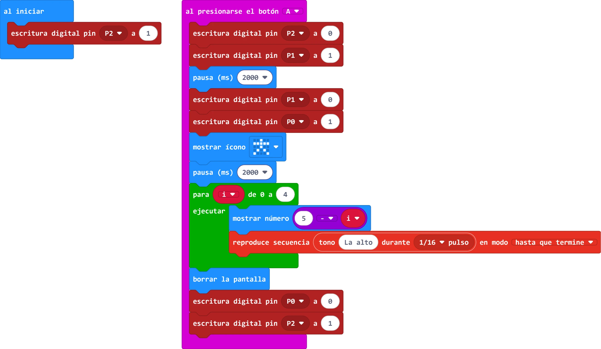
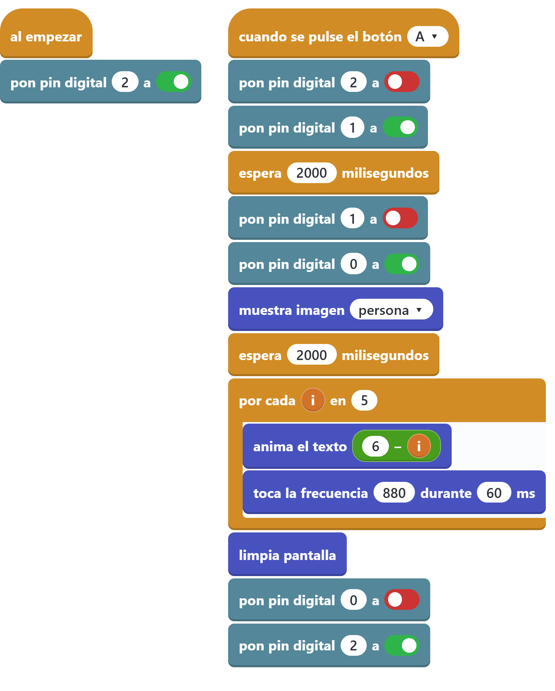

Inicio › Talleres › Proyectos tipo
Cruce con semáforo inteligente
Un cruce de maqueta con semáforo de coches (LED externos) y pulsador de peatones (botón A). Al pulsar, el semáforo de coches pasa a rojo y la pantalla muestra al peatón cruzando.
- 1Semáforo de cochesTres LED con resistencias: rojo en P0, amarillo en P1 y verde en P2; las patas cortas a GND.
- 2micro:bitEl botón A es el pulsador de peatones; la pantalla muestra al peatón cruzando.
- 3Paso de peatonesPintado en la maqueta de cartón.
Necesitas
- micro:bit
- LED rojo, amarillo y verde con resistencias de 220 Ω
- Cables de cocodrilo
- Maqueta de cartón
Conexiones
| LED | Pin |
|---|---|
| Rojo | P0 |
| Amarillo | P1 |
| Verde | P2 |
| Patas cortas | GND |
Paso a paso
- Monta los LED como en la práctica C2.
- Por defecto, el semáforo de coches está en verde.
- Al pulsar A: amarillo 2 s, rojo, muestra el muñeco y cuenta atrás de 5 s para los peatones.
- Vuelve a verde.
Programa

Probar en el simulador
Es el simulador oficial de MakeCode: pulsa sus botones, toca el logotipo o mueve los controles de los sensores.
Ver y copiar el código JavaScript
pins.digitalWritePin(DigitalPin.P2, 1)
input.onButtonPressed(Button.A, function () {
pins.digitalWritePin(DigitalPin.P2, 0)
pins.digitalWritePin(DigitalPin.P1, 1)
basic.pause(2000)
pins.digitalWritePin(DigitalPin.P1, 0)
pins.digitalWritePin(DigitalPin.P0, 1)
basic.showIcon(IconNames.StickFigure)
basic.pause(2000)
for (let i = 0; i <= 4; i++) {
basic.showNumber(5 - i)
music.play(music.tonePlayable(880, music.beat(BeatFraction.Sixteenth)), music.PlaybackMode.UntilDone)
}
basic.clearScreen()
pins.digitalWritePin(DigitalPin.P0, 0)
pins.digitalWritePin(DigitalPin.P2, 1)
})En MakeCode abre la pestaña JavaScript, borra lo que haya, pega el código y vuelve a Bloques.

Usa las bibliotecas Pantalla LED, Tonos. Al abrir el proyecto se cargan solas.
Abrir en MicroBlocks Descargar .ubp
Abre MicroBlocks en Chrome o Edge. Si pregunta si quieres actualizar una biblioteca a una versión nueva, pulsa Sí.
from microbit import *
import music
pin2.write_digital(1)
while True:
if button_a.was_pressed():
pin2.write_digital(0)
pin1.write_digital(1)
sleep(2000)
pin1.write_digital(0)
pin0.write_digital(1)
display.show(Image.STICKFIGURE)
sleep(2000)
for i in range(5, 0, -1):
display.show(i)
music.pitch(880, 60)
sleep(700)
display.clear()
pin0.write_digital(0)
pin2.write_digital(1)Abrir el editor de Python Descargar .py
En el editor de Python pulsa Abrir… y elige el archivo .py, o pega el código.
¿Y si…?
- Añade un segundo semáforo coordinado por radio.
- Programa un modo nocturno con el amarillo parpadeando cuando haya poca luz.
Para el profesorado
Ideal para Educación Vial. Se puede organizar por equipos: uno diseña la maqueta, otro el circuito y otro el programa.
- 10 min: presentación del reto y del material.
- 15 min: diseño en papel (qué mide, qué decide, qué hace).
- 25 min: montaje y programación por fases.
- 10 min: prueba, mejora y presentación al grupo.